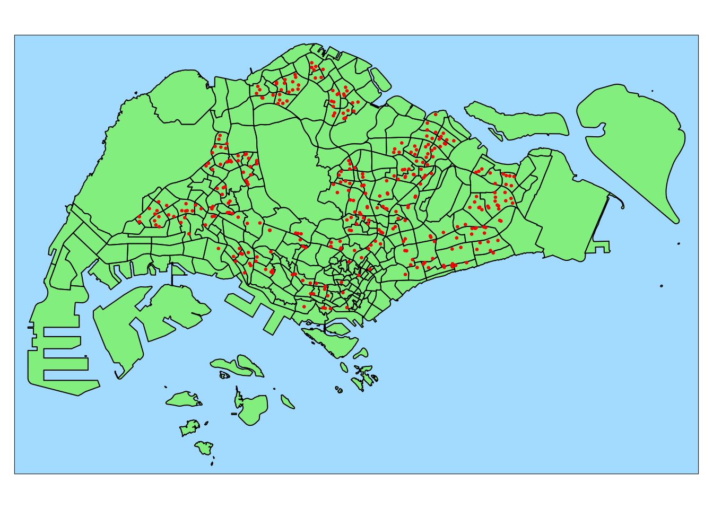
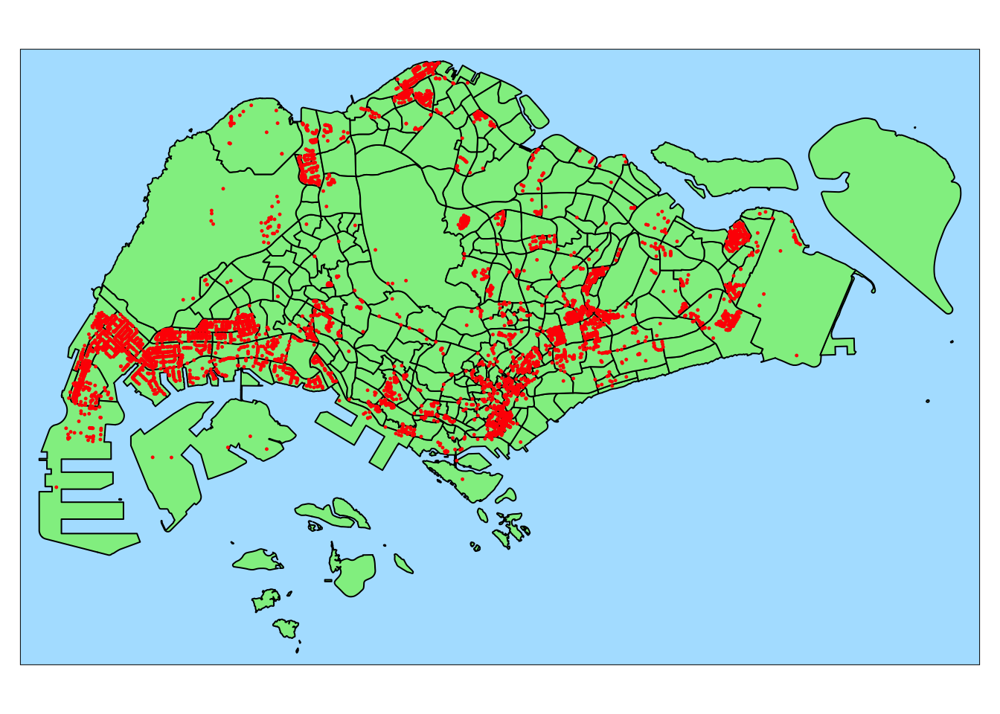

pacman::p_load(tidyverse, sf, httr, tmap)
tmap_mode("plot")
tmap_style("natural")In-class Ex 4: Geocoding
Setup Environment
httr - work with HTML pages
Geocoding
Use https://www.onemap.gov.sg/apidocs/
X, Y in SVY21, longitude latitude in WGS84
url <- "https://www.onemap.gov.sg/api/common/elastic/search"
csv <- read_csv("data/aspatial/GeneralInformationofschools.csv")
postcodes <- csv$"postal_code"
found <- data.frame()
not_found <- data.frame()
for(postcode in postcodes){
query <- list("searchVal"=postcode,"returnGeom"="Y", "getAddrDetails"="Y","pageNum"="1")
res<- GET(url, query=query)
if((content(res)$found) !=0){
found <- rbind(found, data.frame(content(res))[4:13])
} else {
not_found = data.frame(postcode)
}
}
write_rds(found, "data/rds/found.rds")
write_rds(not_found, "data/rds/not_found.rds")csv <- read_csv("data/aspatial/GeneralInformationofschools.csv")
found <- read_rds("data/rds/found.rds")
not_found <- read_rds("data/rds/not_found.rds")
merged = merge(csv, found, by.x = "postal_code", by.y = "results.POSTAL", all = TRUE)
write.csv(merged, file = "data/aspatial/schools.csv")
write.csv(not_found, file = "data/aspatial/not_found.csv")
Important
Use Google to look for the school without geospatial data.
Replace latitude with 1.3887, longitude with 103.7652.
Do this before proceeding to the next step. Or else st_as_sf() will complain about missing longitude and latitude
Preparation
Importing geocoded schools
Import
schools.csvRename column names
Retain only relevant columns
schools <- read_csv("data/aspatial/schools.csv") %>%
rename(latitude = results.LATITUDE,
longitude = results.LONGITUDE) %>%
select(postal_code, school_name, latitude, longitude)schools_sf <- st_as_sf(schools,
coords = c("longitude", "latitude"),
crs=4326) %>%
st_transform(crs = 3414)Confirming projection
Note
I used the projected mpsz from previous exercises.
mpsz <- read_rds("data/rds/mpsz.rds")tm_shape(mpsz) +
tm_polygons(col = "lightgreen") +
tm_shape(schools_sf) +
tm_dots(col = "red", size = 0.025) #+
#tm_view(set.zoom.limits = c(11, 14))Finding how many schools per planning subzone using point in polygon count
mpsz$SCHOOL_COUNT <- lengths(st_intersects(mpsz, schools_sf))Inspect the summary of statistics
summary(mpsz$SCHOOL_COUNT) Min. 1st Qu. Median Mean 3rd Qu. Max.
0.000 0.000 0.000 1.054 2.000 12.000 Importing business geospatial data
businesses <- st_read(dsn = "data/geospatial",
layer = "Business")Reading layer `Business' from data source
`/Users/kjcpaas/Documents/Grad School/ISSS624/Project/ISSS624/In-class_Ex4/data/geospatial'
using driver `ESRI Shapefile'
Simple feature collection with 6550 features and 3 fields
Geometry type: POINT
Dimension: XY
Bounding box: xmin: 3669.148 ymin: 25408.41 xmax: 47034.83 ymax: 50148.54
Projected CRS: SVY21 / Singapore TMtmap_options(check.and.fix = TRUE)
tm_shape(mpsz) +
tm_polygons(col = "lightgreen") +
tm_shape(businesses) +
tm_dots(col = "red", size = 0.01)
Data integration and wrangling
flow_data <- read_rds("data/rds/flow_data_tidy.rds")# Check how to make this work
flow_data <- flow_data %>% left_join(mpsz, by= c("DESTIN_SZ", "SUBZONE_C"))